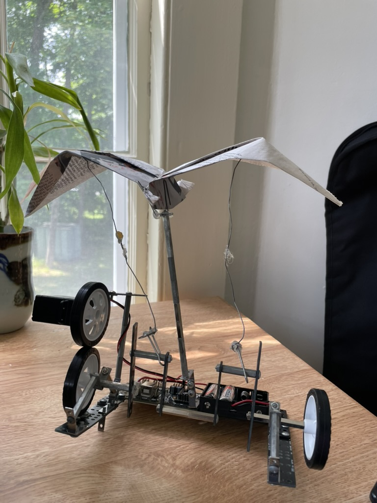

fly away
Tianyi Evans Gu (b. 2006), 2025
Motorized plastic, newspaper clippings, paperclips
in the basement there lies a cage of
leashed dreams that mourn, chained desires that sleep, trapped souls that dance,
gilded lies, silent ghosts, singing spirits.
warbling songs of freedom float away softly,
but suffocate in stale air.
chirp away, trill your tainted melodies, but remember
the taste of wind, the fragrance of daylight, the graceful caress of a falling leaf.
how can you let them whisper their
soft-bellied, honey-laced, words of poison,
let them sing in your ear, even when
you know their words were never theirs.
when the curved metal rusts
when it screams and snaps
remember that we have wings
we were always meant to
fly
Try it yourself (5 min):
Retitle the sculpture and write a poem (however long) inspired by the displayed piece. What feelings and/or emotions does it evoke? What story is aching to be told? Freewrite for 5 minutes, challenging yourself to not stop writing.